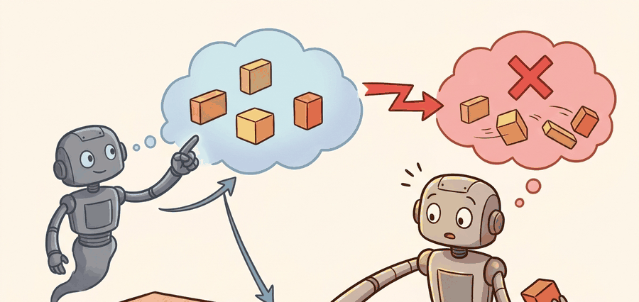

"When two experts would each do something decisive but different, the average of their advice is a hesitation neither would endorse."
A Gripper That Stalled at the Midpoint

This section assumes familiarity with behavioral cloning from section 21.2 and with receding-horizon control from section 7.5. The failure modes identified here motivate the two main remedies developed in this chapter: Action Chunking with Transformers in section 22.2 and diffusion-based action generation in section 22.4. The connection between multimodal action distributions and large-scale data collection recurs in Part VI alongside cross-embodiment generalization in section 35.1.
A robot trained by behavioral cloning reaches toward a cup, hesitates, and knocks it over. The policy was not badly trained: it saw two demonstrators who each reached from a different side, and it averaged them into a path that collides with nothing in either original trajectory. That averaging failure is the central hazard of single-step prediction, and it is why modern manipulation systems commit to sequences of dozens of actions at once rather than deciding moment by moment. In this section you will build the vocabulary for compounding error, mode collapse, and temporal coupling, and see exactly where single-step regression breaks down before meeting the remedies in sections 22.2 and 22.4.
This section develops the technical contract for why single-step prediction fails on real manipulation into a usable mental model. First we define the object of study, then we connect it to the agent loop, then we test it with a compact implementation.
The key question in Why single-step prediction fails on real manipulation is practical: what must the agent know, what can it observe, what action is available, and what evidence shows that the action worked under the stated conditions?
A representation earns its place when it changes the measurable action interface. In why single-step prediction fails on real manipulation, the reader should keep asking which decision becomes easier, safer, or more reliable.
Theory
For Why single-step prediction fails on real manipulation, the practical design rule is to make the interface inspectable before optimization begins: inputs, outputs, units, latency, bounds, and failure labels should all be visible in the saved artifact. Concretely, Zhao et al. (2023) found that single-step behavioral cloning on ALOHA bimanual tasks achieved roughly 50% success on a cup-transfer task, while ACT with $H = 100$ chunking reached over 90% under identical hardware and data conditions. The gap was not model capacity: it was the inability of single-step regression to commit to a coherent grasp trajectory across the 1-2 second contact phase.
Single-step regression collapses multimodal action distributions to their mean. On the ALOHA bimanual platform running at 50 Hz, that mean often lands between two valid gripper trajectories, placing the fingertip directly above the cup rim where neither demonstrator ever went. The physical consequence is a downward approach that contacts the object edge rather than the intended grasp surface, triggering a contact-force spike that the wrist F/T sensor registers as a slip event. Because the policy replans from the resulting perturbed state, each replanning cycle begins from a worse observation than the last: a 2 mm positional error at the start of a Franka Panda grasp grows to roughly 8 mm after four 20 ms control cycles at typical joint-space drift rates, exceeding the 5 mm tolerance needed for reliable pen-in-cup insertion. The log that reveals this handoff failure is the joint-velocity trace during the contact phase: a policy that has mode-averaged shows velocity reversals (sign changes in $\dot{q}$) that neither demonstrator produced, and these reversals are detectable in the first 200 ms of contact without waiting for a full episode rollout.
Worked Example
For Why single-step prediction fails on real manipulation, keep one concrete rollout in view. A sensor reading becomes an estimate, the estimate constrains an action, the action changes the world, and the next observation confirms or contradicts the assumption. The section's idea is useful only if it improves that loop.
from pathlib import Path
dataset_root = Path("robot_demos")
for episode in sorted(dataset_root.glob("episode_*")):
print("inspect", episode.name)
print("next step: convert demonstrations to the LeRobotDataset format")Expected output: the printed trace for Why single-step prediction fails on real manipulation should expose the method configuration, the measured evidence field, and the failure label. If one of those fields is missing or unchanged under the perturbation, the example is not yet an evaluation artifact.
The from-scratch fragment should expose the assumption behind single-step behavioral cloning with delayed correction, compounding error, and contact-rich recovery labels. For serious runs, use LeRobot, robomimic, ACT, Diffusion Policy, VQ-BeT, ALOHA, GELLO, or UMI with the same manifest and evaluator.
Why One-Step Actions Are Too Myopic
A single-step policy predicts $a_t$ from the current observation $o_t$. That is natural for low-level control, but imitation datasets often contain temporally extended intent: reach, align, close, lift, retreat. If the policy regresses one action at a time, small ambiguity in the next instant can create jitter, indecision, or mode averaging between incompatible futures, which is the structural collapse that motivates everything in this chapter.
Compounding error matters in embodied AI because physical contact is irreversible on the timescale of a control cycle. A 2 mm positional overshoot during approach does not reset; it becomes the starting state for the next prediction, which inherits the error and may add its own. On a rigid manipulator running at 50 Hz, errors accumulate across dozens of cycles before any single cycle's loss signal is large enough to trigger a corrective reflex. The result is that tasks requiring precise fingertip placement, such as peg insertion or cup grasping, fail not from a single large mistake but from a cascade of small ones that cross the tolerance boundary late in the trajectory.
The mechanism is a feedback loop between prediction error and state drift. Each predicted action $\hat{a}_t$ deviates slightly from the demonstration action $a_t^*$. Executing $\hat{a}_t$ moves the robot to a state $s_{t+1}$ that was never in the training distribution. The next observation $o_{t+1}$ is therefore out-of-distribution, causing the next prediction to deviate further. Cumulative state error $\Delta_t = \|s_t^\pi - s_t^{\text{demo}}\|$ grows roughly linearly with time when errors are independent, and faster when the task enters a contact-rich phase where small position errors produce large force deviations.
Algorithm: Single-Step Policy Failure Diagnosis
Input: demonstration dataset $\mathcal{D} = \{(o_t, a_t)\}$, trained single-step policy $\pi_\theta$, evaluation rollout of length $T$
Output: failure category label $\ell \in \{\text{mode-avg}, \text{compound-err}, \text{contact-jitter}, \text{recovery-gap}\}$ and corrective chunk size $H^*$
- Fit baseline policy $\pi_\theta$ by minimizing $\mathcal{L}(\theta) = \mathbb{E}_{(o,a)\sim\mathcal{D}}\|\pi_\theta(o) - a\|^2$; record training loss curve.
- Collect $N \ge 30$ closed-loop rollouts; log per-timestep predicted action $\hat{a}_t = \pi_\theta(o_t)$ and executed action $a_t$.
- Compute action-space variance $\sigma^2_t = \text{Var}_{(o,a)\in\mathcal{D},\,o'\approx o_t}(a)$ at each observation; flag timesteps where $\sigma^2_t > \epsilon$ as multimodal.
- For each multimodal timestep, check whether $\hat{a}_t$ lies between demonstrator modes: if $\|\hat{a}_t - \mu_1\| > \delta$ and $\|\hat{a}_t - \mu_2\| > \delta$ for cluster means $\mu_1, \mu_2$, assign $\ell = \text{mode-avg}$.
- Compute cumulative state-error drift $\Delta_t = \|s_t^{\pi} - s_t^{\text{demo}}\|$ over the rollout; if $\Delta_t$ grows monotonically for $t > t_\text{contact}$, assign $\ell = \text{compound-err}$.
- Measure end-effector velocity variance $\text{Var}(\dot{q}_t)$ during contact phase; if it exceeds the demonstration baseline by more than $2\sigma$, assign $\ell = \text{contact-jitter}$.
- Identify recovery windows (timesteps after an intervention or slip); record success rate $\rho_\text{recover}$; if $\rho_\text{recover} < 0.5$, assign $\ell = \text{recovery-gap}$.
- Set candidate chunk size $H^* = \lceil T_\text{contact} \cdot f_\text{ctrl} \rceil$ where $T_\text{contact}$ is median contact-phase duration and $f_\text{ctrl}$ is control frequency.
- Verify $H^*$: re-run rollouts with chunked policy using $\alpha = H^* / 2$ executed steps before replanning; confirm $\Delta_t$ no longer grows monotonically.
- Save a single artifact recording $\ell$, $H^*$, $\rho_\text{recover}$, and the action-variance trace for all future comparisons.
Students often assume that single-step prediction fails because the model is too small or the dataset is too small, and that scaling up solves the problem. This is wrong in the embodied AI context: the failure is structural, not statistical. Even a perfect model trained on unlimited data still collapses a multimodal action distribution to its mean, because mean-squared-error regression has no mechanism to represent multiple valid futures simultaneously. Physical contact makes this fatal: the averaged action moves the robot to a state that appears in neither demonstration branch, and from that out-of-distribution state every subsequent prediction compounds the error irreversibly. The correct mental model is that single-step regression is the wrong loss class for multimodal distributions, regardless of model size or data volume; the remedy is a generative model (diffusion, flow matching, or a mixture head) that can represent the full distribution over next actions.
Bimodal mode averaging is the canonical failure of mean-regression on multimodal demonstration data. When two demonstrators grasp the same object from opposite sides, a mean-squared-error policy predicts the average gripper pose, which is directly above the object and collides with it on descent. Neither demonstrator would ever choose that action. This is not a data-quality problem: it is a structural failure of single-step regression whenever the training distribution has multiple valid next actions for the same observation. Action chunking alone does not solve this; it must be paired with a generative model (diffusion, flow matching, or a mixture head) that can represent the full distribution over futures rather than collapsing it to a single prediction.
Action chunking predicts a horizon of actions $A_t = (a_t, a_{t+1}, \ldots, a_{t+H-1})$. The deployment controller executes only part of the chunk, observes again, then replans. This is receding-horizon imitation: the model commits to a short temporal plan without losing feedback.
A chunk is not just more actions. It is a compact declaration of near-future intent, which lets the model represent coordinated moves such as approach, grasp, and lift as one coherent decision.
Consider a specific case: the ACT policy trained on ALOHA bimanual demonstrations uses a chunk size of $H = 100$ at 50 Hz, meaning each inference call covers 2 seconds of planned motion. The controller executes only the first 20 actions (0.4 s), then replans. On a cup-transfer task, this kept the gripper trajectory smooth across the pick-to-place transition where single-step behavioral cloning produced oscillation at the handoff point (Zhao et al., 2023, Table 2). The same chunk size would be too coarse for a task requiring sub-centimeter fingertip repositioning, where $H = 10$ at 100 Hz is more typical.
When configuring ACT or Diffusion Policy, set chunk_size (the action_horizon parameter in the HuggingFace LeRobot config) to cover the longest uninterruptible sub-skill in your task, not the full episode. A practical starting rule: measure the median duration of the contact phase in your demonstrations and set chunk_size = contact_duration_seconds * control_frequency_hz. For a 0.4 s grasp at 50 Hz that is 20 steps, not 100. Over-long chunks force the policy to commit to stale plans after contact disturbances; under-short chunks reintroduce the single-step jitter this architecture is designed to cure.
Code Fragment 3 shows how a chunked policy can be executed in a receding-horizon loop while only applying the first few actions.
# Execute only the first part of each predicted action chunk.
# Replanning keeps feedback while the chunk carries short-horizon intent.
predicted_chunk = ["reach", "align", "close", "lift", "retreat"]
execute_horizon = 2
executed = predicted_chunk[:execute_horizon]
remaining_plan = predicted_chunk[execute_horizon:]
print("execute now:", executed)
print("replan before:", remaining_plan[0])replan before: close
reach and align before observing again. This pattern stabilizes intent while limiting damage from stale predictions.Practical Recipe
- Write the observation, action, and success metric before choosing a model.
- Build a baseline that is simple enough to debug by inspection.
- Add the library implementation only after the baseline behavior is understood.
- Record failures as structured cases: perception error, state error, planning error, control error, or evaluation error.
- Run at least one perturbation test before trusting the result.
The common mistake in Why single-step prediction fails on real manipulation is to celebrate the component score before checking the closed-loop handoff. The failure usually appears at the boundary: stale state, wrong frame, delayed action, saturated actuator, or metric that ignores the real task cost.
A robot learning engineer applying why single-step prediction fails on real manipulation starts by recording the robot body, camera setup, action units, operator source, and split policy for every episode. That record makes it possible to compare ACT with a baseline without changing the task definition midstream.
Treat why single-step prediction fails on real manipulation like a control-room label. If the label does not tell a future debugger what moved, what sensed, or what failed, it is decoration rather than engineering knowledge.
For Why single-step prediction fails on real manipulation, treat frontier claims as hypotheses until they expose enough detail to reproduce the result: data boundary, embodiment, controller interface, evaluation panel, and failure cases.
Can you name the observation, state estimate, action, success metric, and most likely failure mode for why single-step prediction fails on real manipulation? If not, the system boundary is still too vague.
Why single-step prediction fails on real manipulation becomes useful when it is tied to a closed-loop contract. In this Part V section on Why single-step prediction fails on real manipulation, the contract names the observation stream, the state estimate, the action representation, the timing budget, and the evaluation artifact. Without that contract, a model can look capable in a notebook while failing the first time a sensor drops a frame or a controller saturates.
For Why single-step prediction fails on real manipulation, separate the conceptual claim, the systems claim, and the evidence claim. A plausible mechanism, a clean interface, and a closed-loop result are different claims; the section should keep their evidence separate.
| Tool or Library | Role in the Topic | Builder Advice |
|---|---|---|
| Gymnasium | Why single-step prediction fails on real manipulation | Use it when the experiment needs a maintained implementation rather than custom glue. |
| PettingZoo | Why single-step prediction fails on real manipulation | Use it when the experiment needs a maintained implementation rather than custom glue. |
| ROS 2 | Why single-step prediction fails on real manipulation | Use it when the experiment needs a maintained implementation rather than custom glue. |
| MuJoCo | Why single-step prediction fails on real manipulation | Use it when the experiment needs a maintained implementation rather than custom glue. |
| LeRobot | Why single-step prediction fails on real manipulation | Use it when the experiment needs a maintained implementation rather than custom glue. |
For Why single-step prediction fails on real manipulation, start with a small baseline that logs inputs, outputs, units, timestamps, and termination conditions before moving to Gymnasium or PettingZoo. The library run should keep the same artifact schema, so the comparison remains a same-task evaluation.
- Write a one-paragraph task contract with observation, action, success, and failure fields.
- Start with the smallest simulator, dataset, or wrapper that exposes the task contract faithfully.
- Run one deterministic smoke test and one perturbation test before scaling.
- Save a single result artifact containing configuration, seed, metrics, videos or traces, and failure labels.
- Compare methods only when one script evaluates them on the same task panel.
When Why single-step prediction fails on real manipulation fails, avoid labeling the whole method as weak. First assign the failure to perception, state estimation, planning, control, timing, data coverage, or evaluation. Then rerun one controlled perturbation that isolates the suspected cause. This pattern turns a disappointing rollout into a reusable diagnostic asset.
Agent Checklist Integration
Why single-step prediction fails on real manipulation should be evaluated through four lenses: the learning objective, the robot interface, the data artifact, and the deployment failure mode. Action generators differ mainly in how they represent time, uncertainty, and multimodality across the next chunk of motion.
For single-step prediction exposes compounding error, delayed correction, contact ambiguity, and recovery gaps, define observations, action representation, dataset source, rollout evaluator, and failure labels before training. Then compare baseline and library implementation on the same configuration.
For single-step prediction exposes compounding error, delayed correction, contact ambiguity, and recovery gaps, each demonstration binds operator behavior, robot body, sensor calibration, action representation, and reset distribution. Changing one field creates a new evaluation contract.
| Agent Lens | Question To Answer | Concrete Evidence |
|---|---|---|
| Curriculum and depth | What concept is new here, and why does Part V need it? | A definition, a worked example, and a failure case tied to the perception-action loop. |
| Code and tools | Which maintained tool removes boilerplate after the from-scratch baseline? | ACT, Diffusion Policy, flow matching, VQ-BeT, ALOHA evaluated against the same task contract. |
| Data and evaluation | What distribution produced the behavior, and where can it break? | Train, validation, and stress splits with explicit robot, camera, timing, and license metadata. |
| Publication quality | Can the reader reproduce the claim without hidden context? | Captions, bibliography cards, cross-links, and a same-artifact audit trail. |
Do not claim that why single-step prediction fails on real manipulation improves robot learning unless the baseline and the proposed method share the same robot, task split, reset distribution, success metric, and random seed policy. Otherwise the comparison may be measuring dataset difficulty rather than method quality.
For single-step prediction exposes compounding error, delayed correction, contact ambiguity, and recovery gaps, judge the method by closed-loop recovery, latency, stability, contact behavior, and failure labels under the same robot, reset distribution, cameras, and evaluator.
Who: A robot learning engineer evaluating single-step behavioral cloning with delayed correction, compounding error, and contact-rich recovery labels on the same manipulation benchmark, robot, camera setup, and reset protocol.
Situation: The engineer needs to decide whether why single-step prediction fails on real manipulation is ready for a weekly policy comparison across 120 demonstrations and 30 held-out rollouts.
Decision: They keep the smallest runnable baseline for single-step behavioral cloning with delayed correction, compounding error, and contact-rich recovery labels, then compare the maintained implementation under the same manifest, seed, split, and rollout evaluator.
Result: The team gets one artifact for single-step behavioral cloning with delayed correction, compounding error, and contact-rich recovery labels with task success, intervention labels, timing violations, recovery behavior, and failure categories.
Lesson: single-step behavioral cloning with delayed correction, compounding error, and contact-rich recovery labels earns trust only when the data contract, action representation, and rollout evaluator are versioned together.
Before leaving this section, write one sentence that links why single-step prediction fails on real manipulation to each of these connected chapters: Chapter 21: Imitation Learning, Chapter 23: Teleoperation and Data Collection, Chapter 35: Robot Foundation Models and Cross-Embodiment Learning. If any link feels forced, the section needs a sharper boundary or a clearer prerequisite recap.
Why single-step prediction fails on real manipulation is useful when it makes the perception-action loop more reliable, not when it merely adds a more impressive model name.
Design a method-matched experiment for Why single-step prediction fails on real manipulation. Specify the environment, observation schema, action interface, metric, and one perturbation that targets the section's core assumption.
What's Next
This section grounded why single-step prediction fails on real manipulation in an explicit robot-data contract: observations, actions, demonstrations, evaluation splits, and failure labels. The next reading step is Section 22.2, where the same contract is carried into the next technique or chapter.
Zhao, T. Z. et al. (2023). Learning Fine-Grained Bimanual Manipulation with Low-Cost Hardware. RSS.
This paper introduces ALOHA and Action Chunking with Transformers for bimanual manipulation. It is central for understanding why predicting chunks can stabilize high-frequency robot control.
Diffusion Policy frames action generation as conditional denoising over robot action trajectories. Read it for multimodal action distributions, receding horizon control, and the implementation details behind modern diffusion robot policies.
Lipman, Y. et al. (2022). Flow Matching for Generative Modeling.
Flow matching gives the generative-model background behind many faster action samplers. It is useful when comparing diffusion-style iterative denoising with direct vector-field training.
The project page summarizes the hardware, data collection setup, and ACT policy used for fine-grained bimanual tasks. Builders should use it to connect the paper's algorithm to an actual low-cost robot platform.
real-stanford/diffusion_policy: Official Diffusion Policy Code.
The official code provides training and evaluation examples for state-based and vision-based tasks. It is the shortest route from the section's theory to a runnable policy-learning experiment.